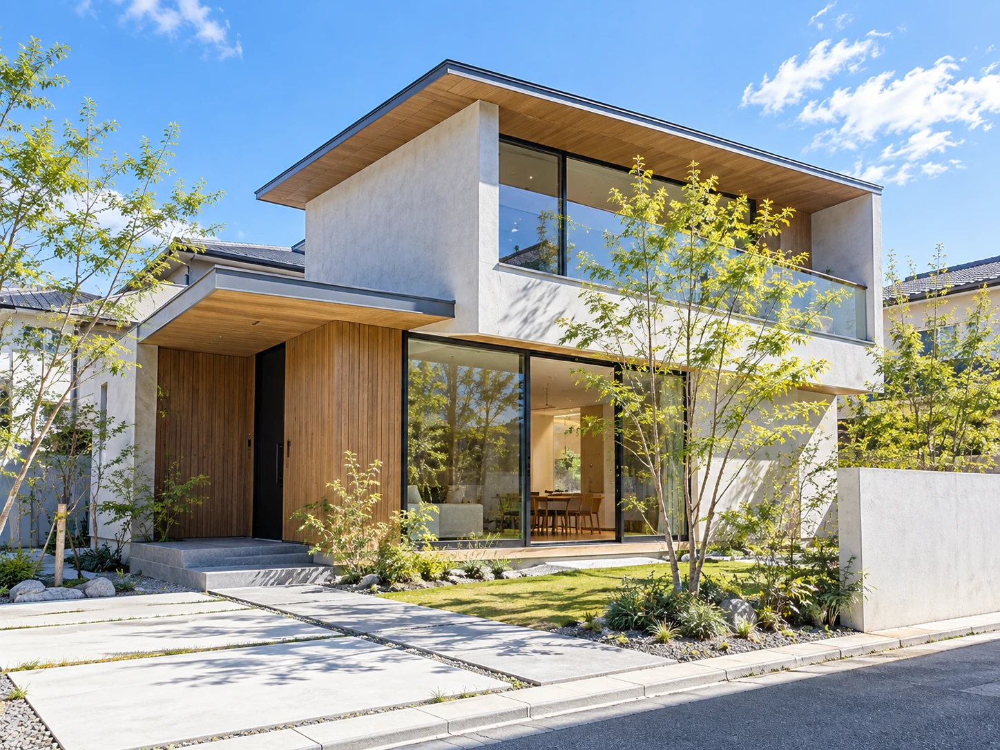
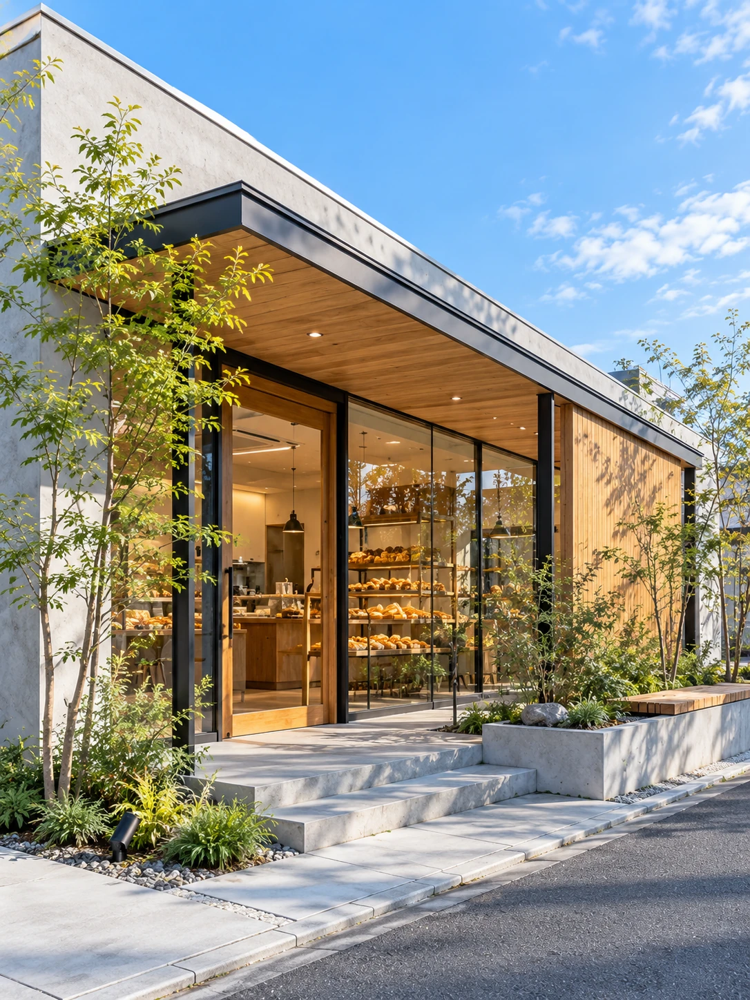
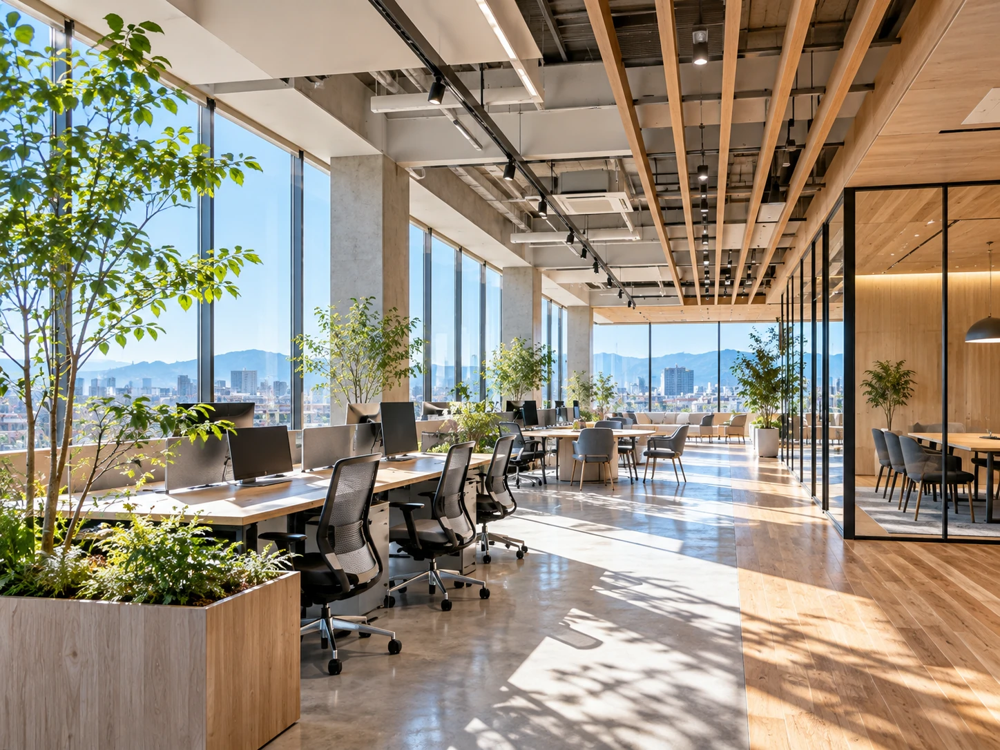
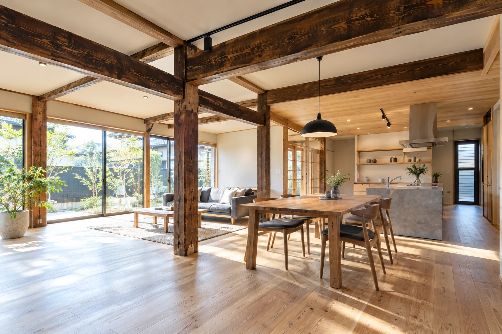
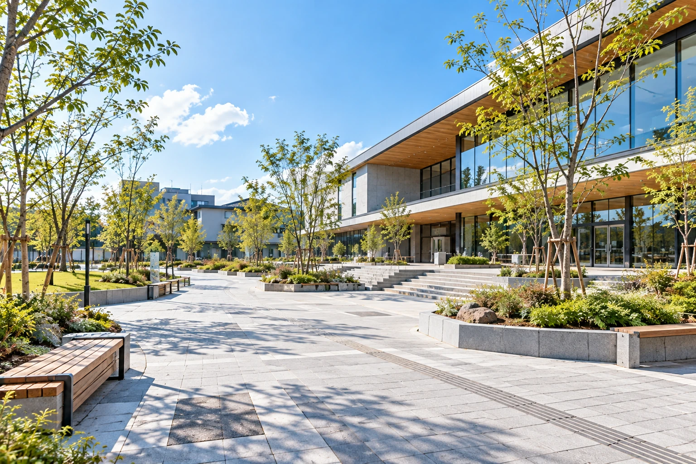
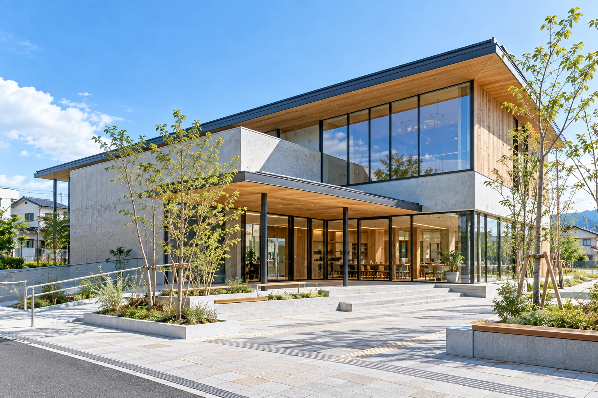

光と庭をつなぐ家
庭と室内がゆるやかにつながる住まい。大きな開口から光と緑を取り込み、家族が集まる場所に、季節の変化を感じられる余白をつくりました。
SOKEN CONSTRUCTION
施工実績
街に残る、
私たちの仕事。
住まい、商い、働く場所、地域の居場所。
用途や規模が違っても、使う人を想うことは変わりません。
一つひとつの場所に向き合い、
街のこれからへつながる建物をつくります。

庭と室内がゆるやかにつながる住まい。大きな開口から光と緑を取り込み、家族が集まる場所に、季節の変化を感じられる余白をつくりました。

街角に開かれた、木の温もりを感じるベーカリー。店内の気配が自然に伝わるガラス面と、訪れる人を迎える植栽を整え、日常に馴染む佇まいを目指しました。

窓辺の光と緑が、働く場所の奥まで届くオフィス。集中と対話の場を緩やかに分け、働く人が気持ちよく行き来できる、明るく柔軟な空間に整えました。

受け継がれてきた柱と梁を残し、今の暮らしに合う住まいへ。既存の木が持つ表情を丁寧に整え、新しい素材と馴染ませながら、時間のつながりを感じる空間に再生しました。

建物への動線に植栽と小さな居場所を重ねた外構計画。歩く人、立ち止まる人、それぞれが心地よく過ごせるよう、舗装と緑のバランスを丁寧に整えました。

大きな軒と広場が、屋内外の活動を緩やかにつなぐ地域施設。誰もが立ち寄りやすく、催しや交流の形に合わせて使える、街の新しい居場所を目指しました。
CONTACT
住宅から店舗、地域の施設まで。
計画の初期段階から、お気軽にご相談ください。